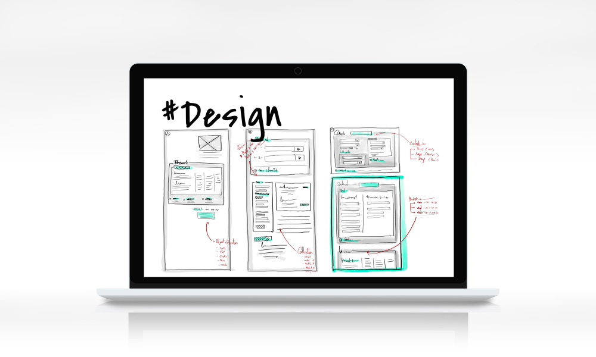

↗
↗DESIGN / UI & UX
UI/UX Design
Interface concept and visual layout sample.
VISUAL CREATOR · CHENNAI, INDIA
I'm Abishek Moses J — a video editor and digital creator focused on making visuals feel clear, considered and memorable.

 CHENNAI / INDIA
CHENNAI / INDIAA LITTLE ABOUT ME
I’m Abishek Moses J, a creative professional from Chennai, Tamil Nadu. I hold a Bachelor of Computer Applications from SRM Institute of Science and Technology and an MBA in Human Resources and Marketing from S.I.V.E.T College.
My interests span video editing, photography, graphic design, audio production and digital content creation. I enjoy learning new tools, experimenting with ideas and bringing a thoughtful approach to every project.
From the first idea to the final export, I bring together visual craft, editing tools and a creator's perspective.
Story-led edits, short-form content, transitions, colour work and sound sync.
Explore service ↗ 02 / FRAME◎Mobile photography, visual composition, image retouching and enhancement.
Explore service ↗ 03 / DESIGN▧Interface concepts, layouts and visual communication with clarity at the centre.
Explore service ↗ 04 / SOUND≋Sound effects, music production and audio layers for creative projects.
Explore service ↗A selection from the project categories and visual samples already featured in my portfolio.
↗Interface concept and visual layout sample.
Short-film edit sample from the existing portfolio.
 ↗
↗Short-form edit with transitions and audio sync.

↗Portrait photography and image-editing sample.
 ↗
↗Mobile interface and wireframe sample.
 ↗
↗Audio and soundtrack sample from the portfolio.
Software and creative tools referenced in my existing portfolio. Proficiency varies by tool and project.
My journey includes academic achievements, community participation and continued learning.
Recognised for 100% attendance and performance during the 2016–2017 academic year.
Participated in a tribal children education programme.
Served as a judge at a college event as a social media influencer.
Selected posts linked from the existing Instagram gallery. Open each post on Instagram to view the original.
For video editing, creative collaborations or project enquiries, send me a message.
abishekmoses184@gmail.com ↗